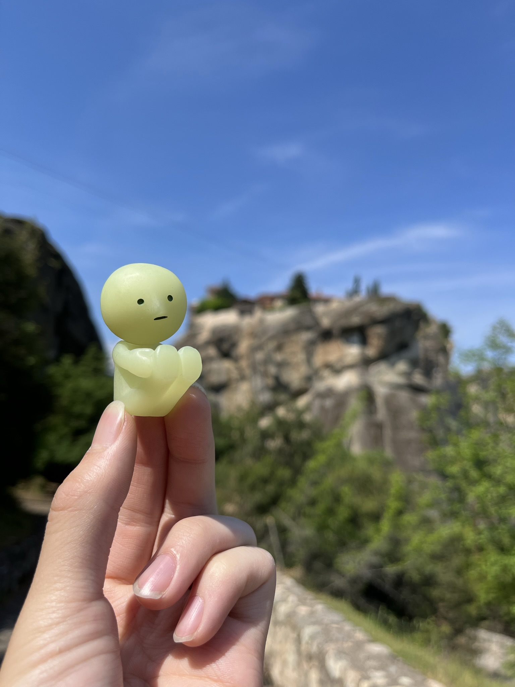

hi mom,
it’s smark today. smike said i was lazy yesterday so i guess i'm doing today’s letter to prove him wrong.
in fact, this was smike at breakfast. if anything he’s the lazy one smh. breakfast here is rly good and starts at 8 compared to the unreasonable times at home, so smad actually ate a lot.
today’s itinerary is the hanging monasteries of meteora. apparently some christians were being chased in the 14th century so they settled on the most inaccessible place they could find, which turned out to be the top of these massive rock spires. personally, i think they did a pretty good job. for example, this is varlaam, the second biggest of the six, but it and st. nickolas are closed on fridays so we couldn’t go inside ¯\_(ツ)_/¯
and of course i got a great picture in front of it.
the first one we went into was the great meteoron, which is the biggest and most popular one. smatt looks great as usual. (those are auntie’s nails, btw. smad’s don’t look nearly as nice.)
we had to climb almost 300 steps but eventually we got there. this was the most steps of all the monasteries; the others were all 150 or less. from the top, we could see the town from above, and it’s crazy how smol it looked. we were so high that smike got scared.
edit: smike here. no i wasn’t!
also there was a cool tunnel so here’s a pic of smad being embarrassing
the next one we went to was my personal favorite, which i think everyone else liked too. it’s called the holy trinity monastery and it’s the only one whose greek spelling doesn’t look very similar to the english name so i always get confused. i like it because it’s more detached from the road so we had to climb down first before climbing up again, and because smike got tired climbing up lolol
edit: yo smark stop spreading slander
edit 2: smark how do you explain this before and after then
along the way, we could really tell that smatt was rly feeling it today :P
once we got to the top, we got some cool pics. here’s smad, although i’m not sure why his left hand looks so awkward.
from here, we went to st. stephen’s. this one was noteworthy because you don’t actually have to climb stairs, but that also meant that all the tour buses and school field trips could only come to this one so it was hella crowded. we ended up just taking a couple pics in front and then dipped.
finally, we went to roussanou, which is the only nunnery (as opposed to monastery) that we saw today. it used to be a monastery too but then this lady in the 1950s rebuilt the ruins and 16 nuns have been living here since 1988. getting up to the top wasn't as extreme as the others but the nuns did a lot more work with growing flowers and making the whole area look nice, which i really liked.
there was also a pretty cool looking monk man there. not sure why he was there but we liked his outfit a lot heh
this pic isn't the most flattering angle for smatt, but you can see just how high and remote these monasteries are, which made them so awe inspiring to all of us. there was so much greenery everywhere and we were also lucky that the weather was so nice today.
at this point it was almost 3 in the afternoon, so we headed down the mountain to get some lunch. our hotel recommended this place called platanos so we gave it a shot and it was indeed really good. i helped order and especially liked the tsaziki sauce with bread. the moussaka (eggplant lasagna) was just ok at the time but for some reason it’s the dish that i keep craving. we also got this free dessert that was hella sweet but yummy. i especially liked the ice cream. everyone told me that they pretty much always get a free dessert after meals, so hopefully that continues.
after lunch, we took a break at the hotel and then returned to the mountain for the sunset. we went to a couple of the scenic areas and got rly nice panoramic views of all of the monasteries except stephen’s. it’s kinda hard to tell but you can see 4 of them (great, varlaam, nickolas, rossanou) in one of these pictures. sadly, it was cloudy so the sunset wasn’t super colorful, but it was still really pretty and the wind felt nice and peaceful.
smad also told me to include this picture? he said you would like this but i dont get why
after that we went back down and ate at this gyro place that had 4.9 stars on google maps. it was realllly good and had huge portions and we barely finished all of it. i don’t know if smike mentioned yesterday (edit: i did, thank you very much) but the food here in greece is so cheap. this meal ended up being about $14 total for all four of us, and it was fresh, quality stuff. we also stopped by this juice store and got fresh squeezed orange juice and mixed drink.

we asked the lady how to say thank you and kinda learned it (f harry’s toe apparently) but we kinda forgot it already tbh.
anyway, after that we went back to the hotel and went to sleep, although smad seemed annoyed at the super slow internet connection. today was a tiring but super fun day and i’m really glad smad brought us. we miss you, mom.
love,
smark (and others)